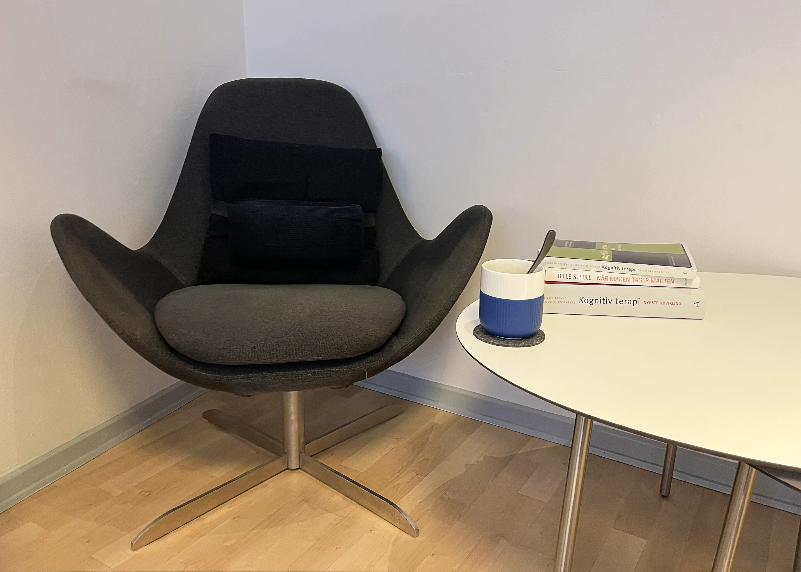
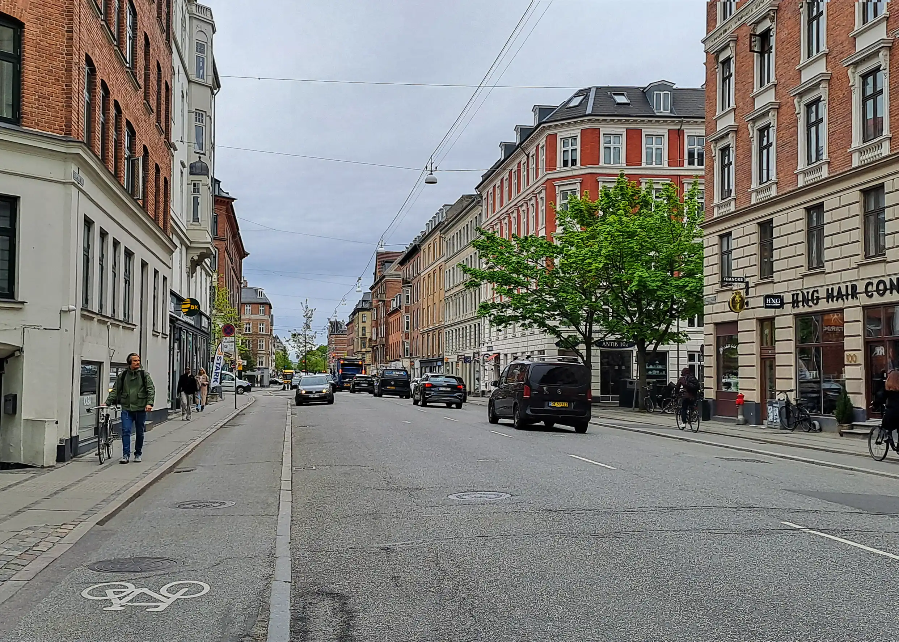
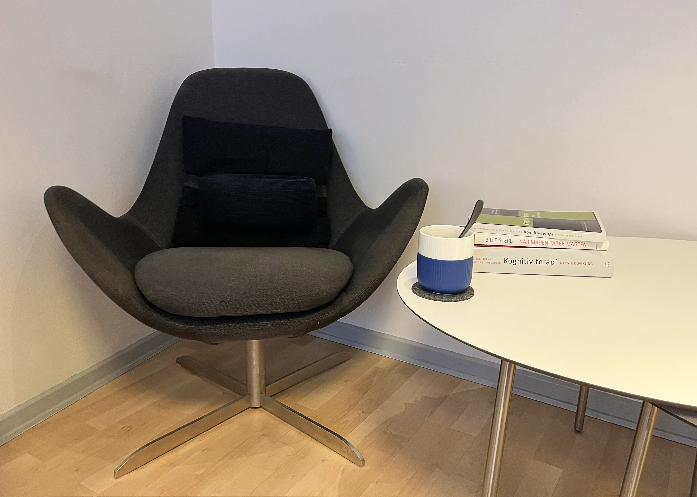
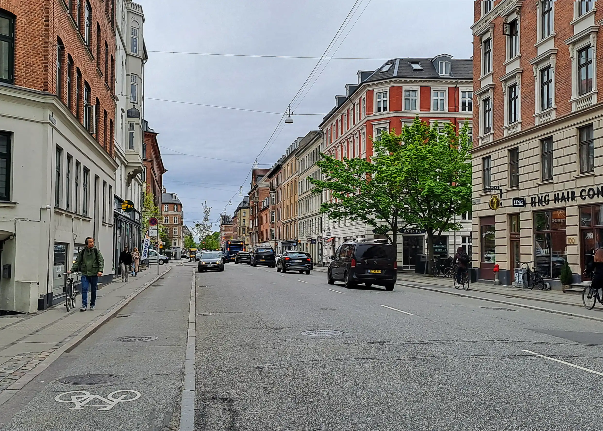

Erfaren kliniker
Jeg er autoriseret psykolog med mange års klinisk erfaring, med speciale i psykoterapeutisk behandling af psykiske lidelser og andre typer af problemstillinger.
Min konsultation ligger på Frederiksberg.
OBS: Jeg har desværre lukket for nye klientforløb frem til foråret 2026.
Spiseforstyrrelser
Jeg har gennem 18 år arbejdet i dybden med anoreksi, bulimi samt atypisk anoreksi og bulimi. Jeg har også erfaring med BED. Jeg tilbyder behandling til voksne samt til unge mellem 15 og 18 år med inddragelse af forældre.
Læs mereOpstart
Et terapiforløb starter altid med en indledende samtale – som regel af 1½ times varighed, hvor vi sammen finder ud af, i hvilken retning terapien skal gå, hvor vi kan komme hen og ofte også et bud på, hvor mange samtaler vi skal bruge for at nå målet. Vi genvurderer det i fællesskab efter 3-4 samtaler.
Du er altid velkommen til, uforpligtende, at kontakte mig på tlf.: 29 89 50 75 eller mail: psykolog@allanblaabjerg.dk så vi sammen kan finde ud af, om vi skal aftale en første vurderende konsultation.
 


